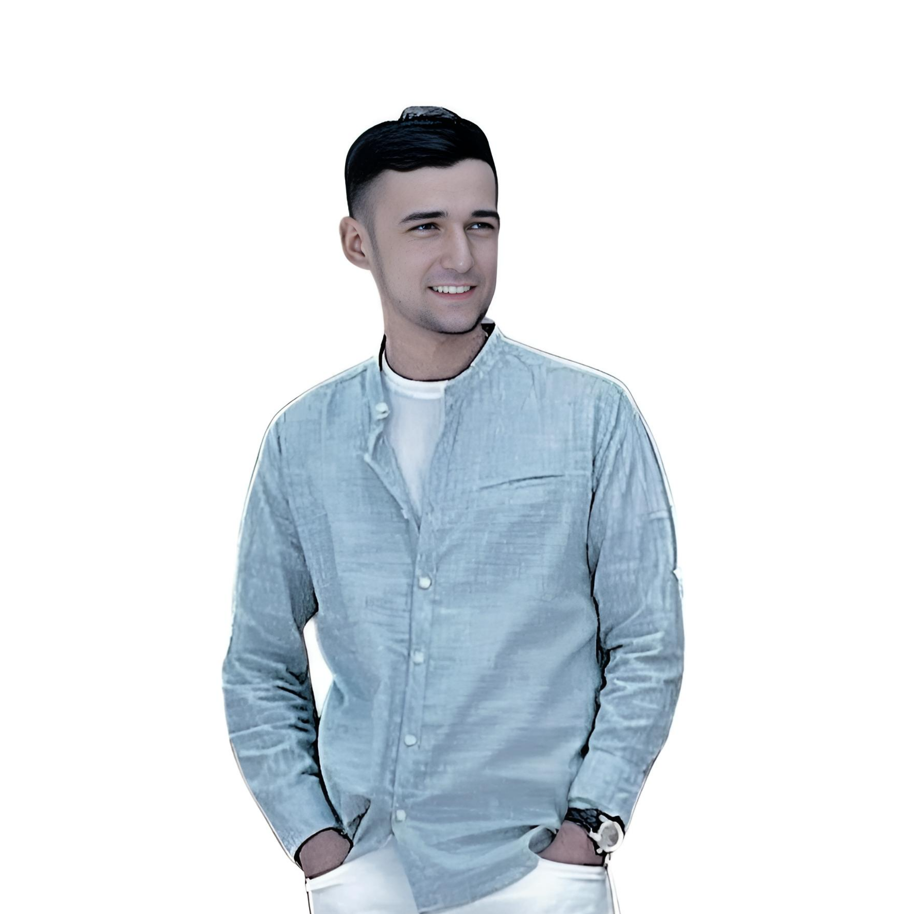

⌁
Автоматизация оборудования
Настраиваю и разрабатываю системы, которые помогают контролировать работу промышленного оборудования, сигналы и процессы.
JAKHON / ENGINEERING STUDIO 09 YEARS / TASHKENT
Я инженер-программист с 9-летним опытом в энергетике. Делаю полезные программы, системы управления оборудованием, Telegram-ботов и AI-видео. Здесь видно, что уже работает, что разрабатывается и что появится дальше.
Сложные задачи —
понятные решения.
Меня зовут Jahongir Juraev. Уже 9 лет работаю в энергетике. Сейчас я ведущий инженер-программист АСУ ТП — создаю и сопровождаю программы, которые помогают контролировать оборудование и технологические процессы.
Развиваю собственные продукты: программы для инженеров, базы данных, мобильные приложения, Telegram-ботов и AI-помощников. Ещё создаю AI-видео, анимацию и мультфильмы. Часть программ уже доступна в бета-версии, другие готовятся к запуску.

Нажмите одну из трёх кнопок: покажу, как устроена система управления, база данных или локальный AI. Это наглядная схема, а не подключение к реальному оборудованию.
SELECT DOMAIN / 01–03
Нажмите на сценарий. Схема и описание обновятся без перезагрузки.
Полевой сигнал поступает в ПЛК. Логика работает локально, а оператор получает состояние через HMI и SCADA.
01 · INPUT REGISTERED02 · LOGIC EXECUTED03 · STATE VISUALIZEDДелаю цифровые продукты для предприятий, инженеров и обычных пользователей.
Настраиваю и разрабатываю системы, которые помогают контролировать работу промышленного оборудования, сигналы и процессы.
Создаю калькуляторы, базы данных, Android-приложения и инструменты, которые экономят время и упрощают работу.
Разрабатываю помощников, уведомления и ботов, которые собирают материалы и готовят публикации для каналов.
Разрабатываю AI-помощников для документов, создаю видео, анимацию и мультфильмы с Runway и другими инструментами.
✳ SELECTED WORK / ТРИ МИРА ИНЖЕНЕРИИ
Выберите проект слева. Увидите его идею и принцип работы — от инженерного калькулятора до умного дома.
Инженерные расчёты, измерительные цепи и протоколы в офлайн-приложении для практической работы.
Изображения выше — авторские интерактивные иллюстрации архитектур, а не скриншоты рабочих систем или живая телеметрия.
Ниже — мои действующие бета-версии, разработки и сервисы. Бета означает, что продукт работает, но продолжает совершенствоваться.
Калькулятор для инженеров на Android: помогает считать электрические величины, проверять приборы и сохранять результаты. Бета-версия — с 5 сентября 2026 года.
Бета с
База данных для учёта оборудования и документов: поиск, контроль сроков, Excel и история изменений. Бета работает, разработка продолжается.
План релиза: Идёт отсчёт
Умный дом: управление светом, климатом и устройствами с телефона. Сейчас проектируется аппаратная часть и система управления; готового комплекта пока нет.
Локальный AI-помощник для технических документов: помогает искать информацию и разбирать материалы. Бета работает, функции продолжают разрабатываться.
План релиза: Идёт отсчёт
Инструмент для анализа схем, PDF и изображений: распознаёт текст и помогает искать обозначения оборудования. Бета работает, развитие продолжается.
План релиза: Идёт отсчёт
Помогаю разобраться в логике промышленного оборудования: схемы, настройки, блокировки и понятные инструкции для инженеров.
Telegram-бот «Гурман»: гастрономический сервис. Бета — 5 марта 2025 года. Публичный запуск планируется в начале 2027 года.
AI-помощник в Telegram: общение, ответы на вопросы и автоматизация запросов. Развитие Telegram-направления продолжается.
Боты, которые самостоятельно находят материалы, обрабатывают их и публикуют в Telegram-каналах в заданном формате. Готовится сервер; планируется несколько таких ботов.
Боты для уведомлений, поиска полезной информации и регулярных задач. Помимо них в планах ещё десятки ботов и цифровых проектов.
Создаю AI-видео, рекламу, motion-ролики и мультфильмы с Runway и дополнительными инструментами.
Здесь показана часть моих проектов. Ещё десятки идей и разработок появятся по мере готовности.
Три продукта уже работают в бета-версии. Показываю плановые даты следующих выпусков. Это цели разработки, а не подтверждение готового релиза.
Распознавание текста и анализ инженерных схем, PDF и изображений.
Учёт оборудования, документов, сроков и изменений в одной программе.
AI-помощник, который ищет информацию в технических документах.
Новые идеи разделены по стадиям, чтобы планы не выглядели как готовые продукты.
Бета появилась 5 марта 2025 года. Публичный запуск гастрономического бота запланирован на начало 2027 года.
Несколько ботов будут сами искать контент, приводить его к заданному формату и публиковать в каналах. Также разрабатываются идеи других полезных ботов.
Android и iPhone: менструальный цикл, беременность, колыбельные и энциклопедия для родителей — всё в одном месте.
Площадка для поиска приборов, материалов, оборудования, инструментов и специалистов. Связь заказчиков с производителями и поставщиками.
Умный дом с управлением через телефон. Аппаратная часть и программная система находятся в разработке.
Создание мультфильмов, рекламы, анимации и видео с Runway и дополнительными инструментами.
Планирую начать разработку игр для смартфонов в конце 2027 года.
В планах ещё десятки Telegram-ботов, инженерных инструментов и собственных цифровых продуктов.
Начинал с оборудования высокочастотной связи на электростанциях. Затем занимался промышленной автоматизацией и программами для управления оборудованием.
Мой опыт в энергетике ↗Текущая должность. Инженерная логика, ПО, SCADA/HMI и интеграция.
Технологические процессы, блокировки, уставки, КИП и эксплуатация.
Диагностика и наладка аппаратуры ВЧ-каналов связи в энергетике.
Техническая система должна быть понятна тому, кто будет её эксплуатировать и поддерживать.
Фиксируем исходные данные, ограничения, интерфейсы, критерии приёмки и необходимые подтверждения.
Выбираем минимально достаточный стек, проектируем обмен данными, отказоустойчивость и интерфейс.
Тесты, документация, демонстрация сценариев. Прототип и подтверждённый релиз не смешиваются.
Ориентировочный прайс для обсуждения. Финальная стоимость зависит от ТЗ, объёма, доступа к оборудованию и требований к проверке.
Разбор задачи, техническая консультация, предварительная архитектура и план работ.
Веб-интерфейс, скрипт, бот, прикладная программа или автоматизация документооборота.
Инженерные базы, SCADA/HMI-проекты, анализ алгоритмов, локальные AI-компоненты и интеграции.
Цены — предварительные ориентиры, а не утверждённая оферта. Никакие работы на действующем промышленном оборудовании не предполагаются без согласованной документации, допусков и процедур безопасности.
Да, после оценки архитектуры, исходного кода, лицензий, интерфейсов и необходимых изменений. Не все демонстрационные компоненты готовы к промышленной эксплуатации.
Для ряда проектов локальная работа — базовый принцип. Удалённый доступ, синхронизация и резервирование проектируются отдельно, с учётом требований к защите данных.
Сначала фиксируем ТЗ, объём, сроки, критерии приёмки, требования к оборудованию и поддержку. После этого согласуется смета и состав работ.
Опишите оборудование, процесс или идею продукта. Начнём с требований и технических ограничений — без обещаний, которые нельзя проверить.